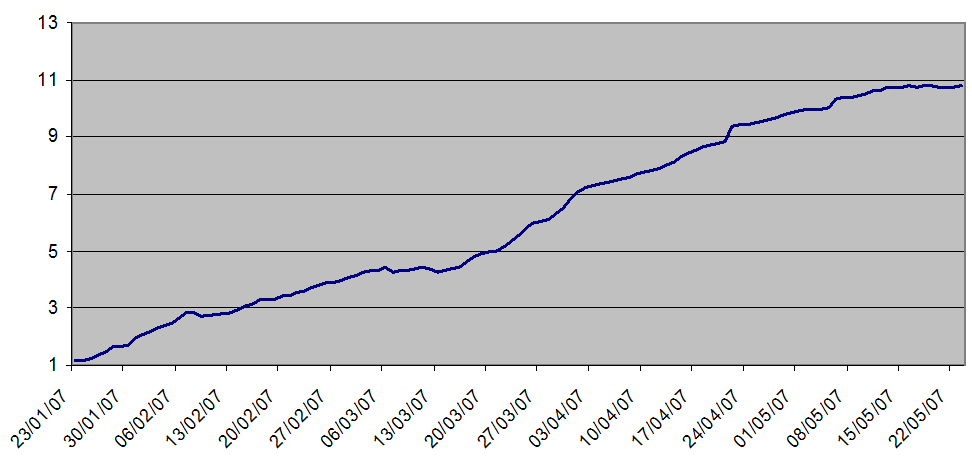
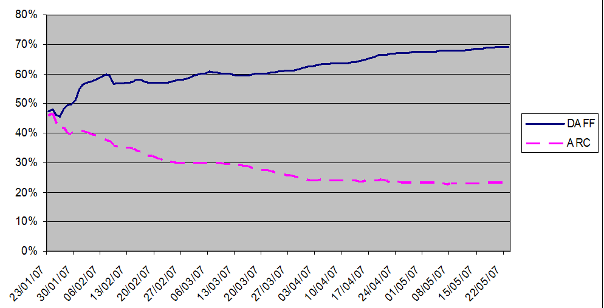
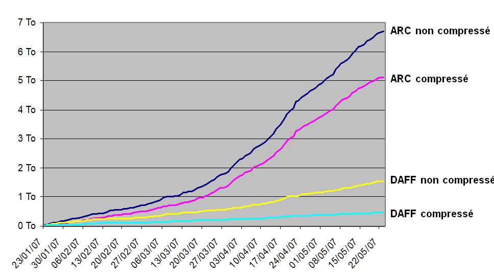

David RAPIN, 2012-11-30
Web archiving
at
Continuous crawls
(Crawling never stopped since 2009)
10 000 websites
(Crawled at different depths and frequencies)
16 million resources
collected daily
(pages: 25%, images: 60%, other: 15%)
1.6 TB of data
crawled daily
(Before deduplication)
in addition
65+ GB of audio/video
crawled daily
By embedded-media extractors
(Youtube, Dailymotion, Vimeo, Soundcloud, etc.)
Digital Archive File Format
(Simple, built-in integrity check)
Content deduplication methodology
- Data and metadata stored separately
- Data indexed by content signature (SHA256)
Deduplication results

- Observed compression factor: 10
- Depends on crawl frequencies
Deduplication effects on compression

- Higher HTML files proportion
- Better compression factor (70%)
Storage needs evolution

(3/3) Crawling modern websites
Multiple crawlers
for different needs
PhagoSite
- Historical crawler
- Fast, basic JavaScript link extraction
Crocket
- Firefox based
- Very slow, fully JavaScript enabled
Fantomas
- PhantomJS based
- Slow, fully JavaScript enabled
An infrastructure for
multi-crawler archiving
Live Archiving Proxy
- One storage backend
- Plug-and-play 'writer' plugins
- No storage on crawl servers
- Multiple writers provide fault tolerance
Live Archiving Proxy
Available April, 2013